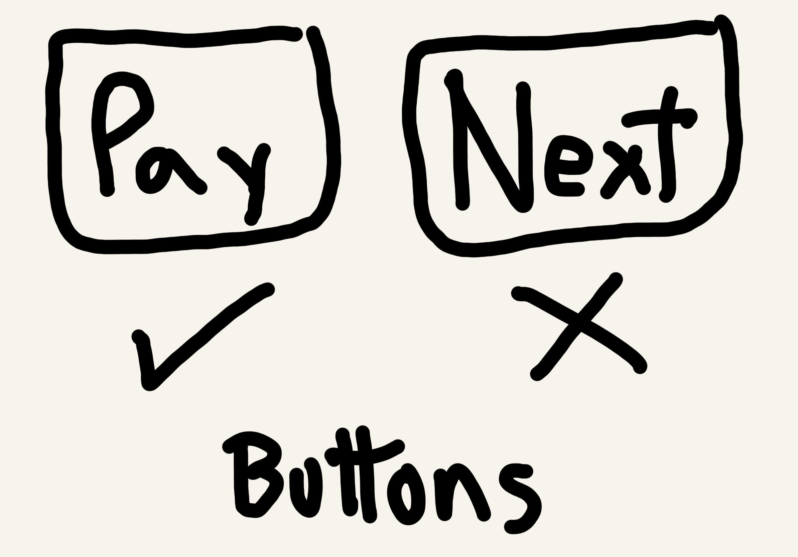

UX Writing
Project: Getting the words right for an app
Note: due to a non-disclosure agreement (NDA), I cannot share many details about this project. If you would like to learn more, please get in touch directly with me.
Independently of the type of app or website you are working on, getting the words right is crucial. Words set the voice for your brand and can improve user journeys. However, they can also ruin the entire User Experience (UX). That is why many companies implement UX Writing, an effective way to tune your brand voice and products with users' needs.
For financial products, using the right words is crucial. Users want to avoid any potential confusion that might end up affecting their finances. After all, it is their money they are dealing with.
Read on to find out how I implemented UX Writing best practices for an emerging financial product in Colombia.
Context
I was invited to be part of a team for a new financial product in the Colombian market. The development of the app had already begun when I joined. The project manager shared some files with me to check for spelling mistakes and other minor things. He was expecting a routine revision of the content of the app. However, lots of red flags started appearing everywhere. I noticed there were many typos, inconsistencies, and even worse, confusing messages that negatively affected the User Experience.
It was clear there had been no one taking care of the texts inside the app. I knew I had to put on my UX Writer hat. If you do not know what UX Writing is, think of it as the use of UX methods to write texts that help users achieve desired outcomes. I was aware that if the words were left unaddressed, the company risked delivering a poor User Experience, to say the least. In the worst of cases, they would launch a poorly built product that would disappoint users.
With the possibility of a high churn rate in mind, I contacted some of the people involved to let them know my concerns.
Problem
Most software projects focus exclusively on technical aspects like the code. If there is time and budget left, designers come in. Rarely do the words in an app receive the attention they deserve.
Aware of the tight schedule, I had to convince the team that the app needed some important changes in order to deliver the right experience. Failing to do so could put at risk not only the app, but the entire company and its promise to deliver an easy-to-use financial product.
Solution
To make my point about the importance of UX Writing I used the example of a payment button. As a product owner you want the text in the button to be as clear as possible to your users. Instead of just saying 'Next' it should say something more specific like 'Pay' or 'Review payment.' That way, the user knows what will actually happen once they click. This was a very specific case, but everyone got the point and agreed that it was necessary to review the words in the app.
With no time to waste I laid out a plan of action. Together with the design team we did some research on what mattered to users. This in turn allowed us to build high fidelity wireframes and detailed user journeys to address potential roadblocks.
Research was focused around the existing app prototype. The result shed light on aspects like:
- Communicating errors without leaving users on their own to solve the issue
- Using the right call-to-actions depending on the stage of the user journey
- Designing an onboarding experience to reduce churn and increase retention
- Adapting the app and its features to both basic and advanced users
Addressing these matters helped the development team focus on the technical aspects of the app without disregarding the User Experience. In the end, they were able to launch the product without delays and with an improved User Experience. As of today, the company has been growing and its app has been regarded by users as a better alternative than the ones offered by traditional banks.
Insights
It is often the case that resources are scarce when working on a digital product. Time is never on your side and there is a lot to do. However, this does not mean that things like the User Experience should be neglected. Talking to the right people and explaining the importance of getting it right is essential.
UX Writing, although not widely known, is a crucial part of delivering a powerful User Experience. By implementing its best practices, companies are able to fine-tune their products so that they speak the same language as their users. By doing so, they can increase brand loyalty, and ultimately, achieve larger organisational goals.
Research is a very important part of this process. My philosophy driven approach to UX Writing can help you dive deep into the psyche of your users to understand what their needs are. It helps build products that create real value for you and your users.
If you found this interesting and would like to know more about my methods and how I can help your company, contact me.